Primero que nada, me gustaria explicarles que es un anime shoujo, ya que no todos lo saben. Un anime shoujo es un anime dirigido a un publico femenino, el cual tiene como objetivo principal el romance y la relacion entre los personajes.
A continuacion les mostrare una lista de animes shoujo que he visto.
- Aishiteruze Baby (2004)
- Akagami no Shirayuki-hime (2015)
- Brothers Conflict (2013)
- Fruits Basket (2001)
- Inu x Boku SS (2012)
- Kaichou wa Maid-sama! (2010)
- Kamigami no Asobi (2014)
- Kamisama Hajimemashita (2012)
- Kimi no Na wa (2016)
- Lovely Complex (2007)
- Ouran High School Host Club (2006)
- Peach Girl (2005)
- Soredemo Sekai wa Utsukushii (2014)
- Special A (2008)
- Starry Sky (2010)
- Uta no Prince-sama Maji Love 1000% (2011)
- Uta no Prince-sama Maji Love 2000% (2013)
- Uta no Prince-sama Maji Love Revolutions (2015)
- Uta no Prince-sama Maji Love Legend Star (2016)
- Wotaku ni Koi wa Muzukashii (2018)
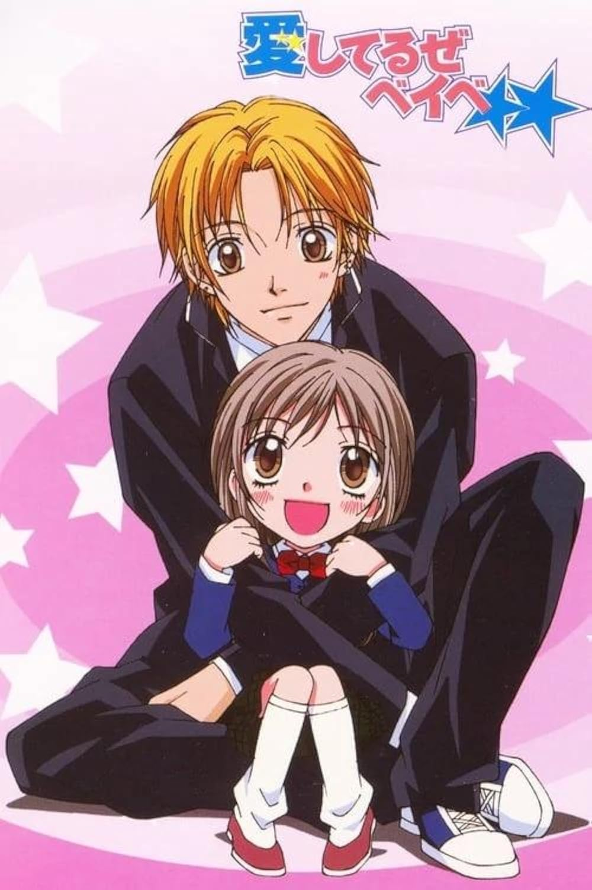
Kippei Katakura es un joven mujeriego que pasa sus días con cualquier chica que se le cruce. En realidad, solo tiene ojos para una chica en particular: Kokoro Tokunaga. Un día, la familia de Kippei le presenta a su prima de cinco años, Yuzuru Sakashita, cuya madre la ha abandonado. A Kippei se le encomienda la tarea de cuidar de Yuzuru hasta que su madre regrese, y la pequeña rápidamente le toma cariño.
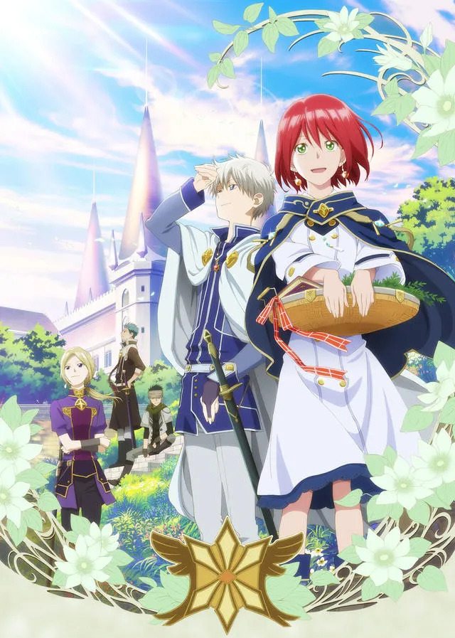
Aunque su nombre significa "Blancanieves", Shirayuki es una alegre joven pelirroja que vive en el país de Tanbarun y trabaja diligentemente como boticaria en su tienda de hierbas. Su vida cambia drásticamente cuando el príncipe Raji, un hombre algo excéntrico de Tanbarun, se fija en ella e intenta obligarla a convertirse en su concubina. Reacia a renunciar a su libertad, Shirayuki se corta su larga melena roja y huye al bosque, donde es rescatada de Raji por Zen Wistalia, el segundo príncipe de un país vecino, y sus dos ayudantes. Con la esperanza de algún día saldar su deuda con el trío, Shirayuki se propone convertirse en la herbolaria de la corte en Clarines, el país de Zen.
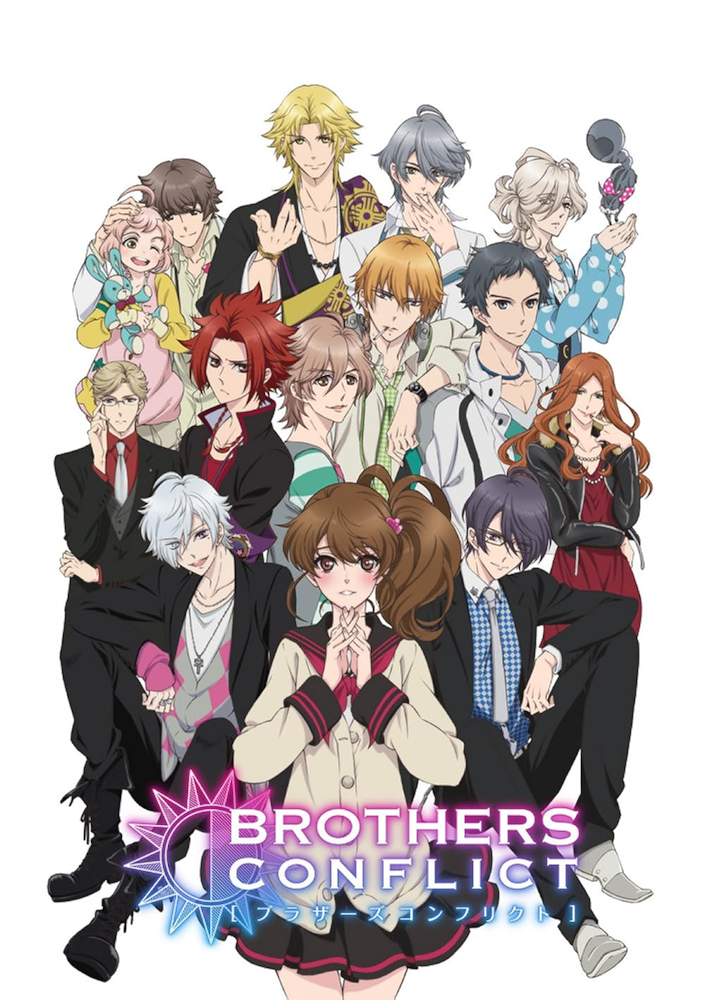
Ema Hinata es una chica dulce cuya única familia es su padre. Un día, descubre que él se volverá a casar con Miwa Asahina, una adinerada diseñadora de moda. Aunque se alegra de tener un nuevo hogar, la familia que encuentra es mucho más grande de lo que jamás imaginó: ¡ahora tiene trece hermanastros! Deseando darle espacio a su padre, se muda a la Residencia Sunrise, donde viven sus hermanos. Al instalarse, Ema se da cuenta de que tal vez no experimente el cariño familiar que siempre ha anhelado, ya que muchos de sus nuevos hermanos muestran hacia ella sentimientos que van más allá del afecto familiar.
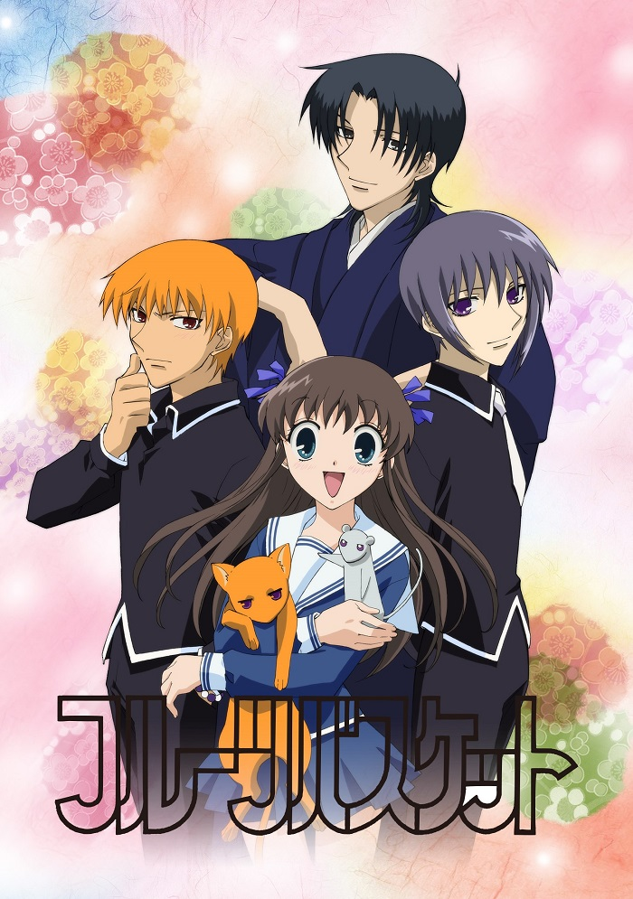
Tohru Honda es una estudiante de secundaria que, tras la muerte de su madre, se ve obligada a vivir en una tienda de campaña. Un día, mientras busca un lugar para refugiarse de la lluvia, se encuentra con la misteriosa familia Soma. Pronto descubre que los miembros de esta familia están malditos: cuando son abrazados por alguien del sexo opuesto, se transforman en animales
Ririchiyo Shirakiin es la hija protegida de una familia adinerada. Con su menuda complexión y su posición social acomodada, Ririchiyo ha sido una chica protegida y dependiente toda su vida, pero ahora ha decidido cambiarlo todo. Sin embargo, hay un pequeño problema: la joven tiene una lengua afilada que no puede controlar y pésimas habilidades comunicativas. Con la ayuda de una amiga de la infancia, Ririchiyo se instala en Maison de Ayakashi, un complejo de apartamentos aislado y de alta seguridad que, como pronto descubre la antisocial joven de 15 años, alberga a un sinfín de individuos extraños. Además, sus peculiares personalidades no son lo más raro de ellos: cada habitante de Maison de Ayakashi, incluida Ririchiyo, es en realidad mitad humano, mitad youkai. Pero los problemas de Ririchiyo no han hecho más que empezar. Como requisito para permanecer en su nuevo hogar, debe estar acompañada por un agente del Servicio Secreto. El nuevo compañero de Ririchiyo, Soushi Miketsukami, es guapo, callado... pero ridículamente pegajoso y extrañamente sumiso. Con Soushi, sus nuevos vecinos sobrenaturales y el comienzo del instituto, Ririchiyo sin duda tiene un camino difícil por delante.
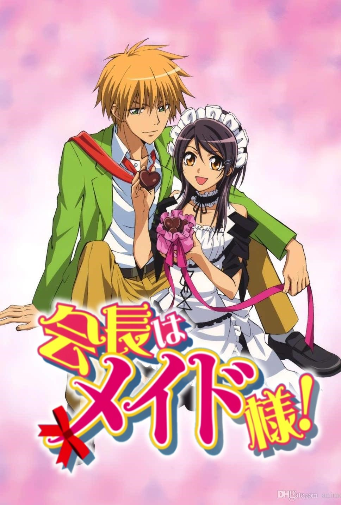
El instituto Seika era exclusivamente masculino, pero ahora es mixto. Misaki Ayuzawa es la primera mujer presidenta del consejo estudiantil, ganándose el apodo de "Presidenta Demonio" por su dominio del Aikido y su férrea autoridad. Sin embargo, Misaki guarda un secreto vergonzoso: trabaja en un maid café para mantener a su familia. Si alguien del instituto lo descubriera, su reputación quedaría completamente arruinada. Y después de que Takumi Usui, el chico más popular del instituto, descubra su secreto, eso podría suceder. ¡Kaichou wa Maid-sama! narra su historia a medida que pasan más tiempo juntos y empiezan a comprender los secretos del otro.
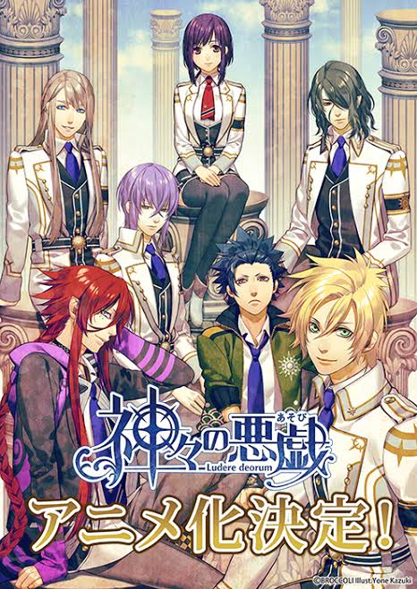
Tras descubrir una misteriosa espada en el trastero de su casa, Yui Kusanagi, estudiante de tercer año de bachillerato, se ve transportada repentinamente a un mundo diferente. Mientras explora su nuevo entorno, conoce a cinco hombres extraños pero apuestos antes de encontrarse cara a cara con Zeus, el rey de los dioses. Para restaurar la deteriorada relación entre dioses y humanos, Zeus ha creado la Academia de los Dioses y ha elegido a Yui como su única instructora. Tiene un año para instruir a las jóvenes y reacias deidades —incluidos los cinco extraños que conoció antes— sobre lo que significa ser humano, al tiempo que aprende sobre los dioses; de lo contrario, quedarán atrapadas para siempre en el reino de Zeus.
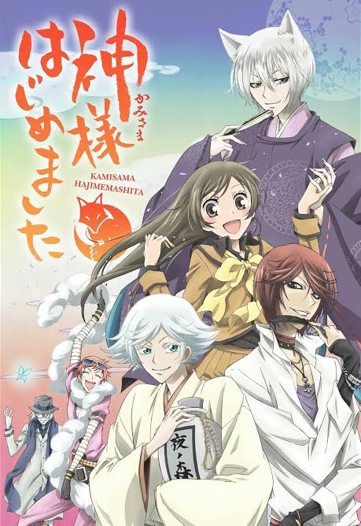
Nanami Momozono, estudiante de secundaria, tiene bastantes problemas últimamente, empezando por su padre ausente, que está tan endeudado que lo pierden todo. Abatida y sin hogar, se topa con un hombre al que un perro está acosando. Tras ayudarlo, le explica su situación y, para su sorpresa, él le ofrece su casa en agradecimiento. Pero cuando descubre que dicha casa es un santuario en ruinas, intenta marcharse; sin embargo, es capturada por dos espíritus del santuario y un zorro familiar llamado Tomoe. La confunden con el hombre que Nanami rescató: el dios de la tierra del santuario, Mikage. Al darse cuenta de que Mikage debe haberla enviado allí como diosa sustituta, Tomoe se marcha abruptamente, negándose a servir a una humana. En lugar de volver a la indigencia, Nanami se sumerge en sus deberes divinos. Pero si quiere que todo funcione correctamente, necesitará la ayuda de cierto zorro impulsivo. En su torpe intento por encontrar a Tomoe, se mete en problemas y termina sellando un contrato con él. Ahora, ambos deben recorrer juntos el camino hacia la divinidad como dios y familiar; pero no será fácil, pues surgen nuevas amenazas en forma de un youkai que quiere devorar a la chica, una serpiente que quiere casarse con ella y los inesperados sentimientos de Nanami hacia su nuevo familiar.
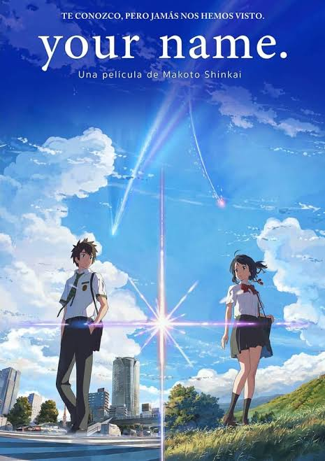
Mitsuha Miyamizu, una estudiante de secundaria, anhela vivir como un chico en la bulliciosa ciudad de Tokio, un sueño que contrasta enormemente con su vida actual en el campo. Mientras tanto, en la ciudad, Taki Tachibana lleva una vida ajetreada como estudiante de secundaria, compaginando su trabajo a tiempo parcial con sus aspiraciones de convertirse en arquitecto. Un día, Mitsuha despierta en una habitación que no es la suya y de repente se encuentra viviendo la vida de sus sueños en Tokio, ¡pero en el cuerpo de Taki! Por otro lado, Taki se encuentra viviendo la vida de Mitsuha en el humilde campo. En busca de una respuesta a este extraño fenómeno, comienzan a buscarse mutuamente.
El amor es inusual para Risa Koizumi y Atsushi Ootani, quienes se esfuerzan por encontrar a su pareja ideal en la preparatoria. Koizumi, con 172 cm de altura, es mucho más alta que la chica promedio, mientras que Ootani, con 156 cm, es mucho más bajo que el chico promedio. Para colmo, sus amores platónicos se enamoran el uno del otro, dejando a Koizumi y Ootani cómicamente desconcertados y con el corazón roto. Para empeorar las cosas, su profesor tutor los etiqueta como un dúo cómico debido a sus personalidades y la marcada diferencia de altura, y sus compañeros incluso consideran sus discusiones como sketches.
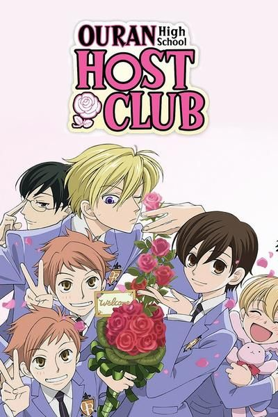
Haruhi Fujioka es una estudiante aplicada que se ha matriculado recientemente en la prestigiosa Academia Ouran. Un día, mientras busca un lugar tranquilo para estudiar, se topa con una sala de música aparentemente en desuso. Al entrar, Haruhi es recibida por los miembros del conocido Club de Anfitriones: un club donde chicos atractivos entretienen a chicas de toda la escuela. Sin embargo, cuando Tamaki Suou, fundador y presidente del club, asusta a la brillante estudiante becada, ella rompe accidentalmente un jarrón caro. Con la devolución del dinero a punto de resultarle difícil a Haruhi, los miembros del Club de Anfitriones idean la solución perfecta para su problema: ¡trabajar para el club y convertirse en Anfitriona! Confundida con un chico por sus compañeros, Haruhi tiene que entretener a varias estudiantes mientras lidia con las extravagantes personalidades de sus compañeros Anfitriones.
Con su hermosa piel bronceada y su larga melena rubia, Momo Adachi, exmiembro del equipo de natación de su instituto, parece el tipo de chica que podría conseguir a cualquier chico que quisiera. Sin embargo, en realidad, solo está enamorada de Kazuya "Toji" Toujigamori, un jugador de béisbol del que se enamoró en la secundaria y que, según se dice, solo le gustan las chicas de piel clara. A pesar de sus intentos por cambiar su apariencia, muchos de sus celosos compañeros de clase han empezado a difundir rumores sobre su personalidad promiscua y "fácil de conquistar". La amiga de Momo, Sae Kashiwagi, siempre está ahí para consolarla, pero en secreto es la fuente de los rumores sobre Momo como parte de su propio plan para robarle a Toji. Para complicar aún más las cosas, está Kairi Okayasu, un popular estudiante de su instituto que le ha declarado públicamente su amor y está decidido a salir con ella. Con la esperanza de encontrar el amor en una situación casi imposible, Momo debe sortear complicados triángulos amorosos, traiciones de sus amigos y sus inseguridades sobre su apariencia para descubrir quién es realmente.
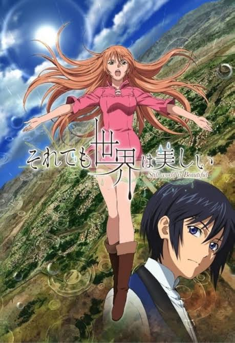
En el Reino del Sol, la luz del sol forma parte de la vida cotidiana de sus habitantes, y la lluvia es algo que jamás han oído mencionar. Sin embargo, en una tierra lejana llamada el Ducado de la Lluvia, el clima es opuesto, y todos tienen el poder de crear lluvia con sus voces. Livius Orvinus Ifrikia ha conquistado el mundo entero y expandido la influencia del Reino del Sol en los tres cortos años transcurridos desde su coronación. Al enterarse del poder de crear lluvia, Livius decide casarse con Nike Remercier, una de las princesas del Ducado de la Lluvia. Sin embargo, fuera del Reino del Sol se ha extendido el rumor de que Livius es un gobernante cruel, despiadado y tiránico, y cuando la noticia llega a oídos de la princesa, ella comienza a prepararse para lo peor. Pero cuando finalmente conoce a su prometido, Nike descubre que es una persona completamente diferente de lo que esperaba.
Hikari Hanazono siempre ha sido capaz de hacer cosas que la gente normal no puede. De niña, creía que nadie podía vencerla, hasta que conoció a Kei Takishima. Pensando que ganaría, Hikari lo retó a un duelo. Pero las cosas no salieron como esperaba; perdió no una, sino todas las veces que lo retó. Desde entonces, juró superar a Kei en todo, desde lo académico hasta lo deportivo. Para lograr su objetivo, Hikari se matricula en la misma escuela que Kei: Hakusenkan, un prestigioso instituto para jóvenes adinerados. Juntos, ocupan los dos primeros puestos de la escuela y se encuentran entre los siete mejores estudiantes de la academia en una clase conocida como Especial A. Si bien Hikari trata a Kei como un rival, ignora por completo que él siente algo por ella. Juntos, los miembros de Especial A lidian con la competencia, la amistad y un poco de amor.
La Academia Seigetsu, antiguamente un colegio solo para chicos, es ahora una institución mixta que perfecciona el conocimiento de sus alumnos en astronomía. En este contexto, Tsukiko Yahisa se matricula como la primera y única alumna de la academia. La acompañan sus mejores amigos de la infancia, Kanata Nanami y Suzuya Touzuki, quienes la protegen de los intentos de ligar de sus compañeros. Mientras Tsukiko se adapta a su nuevo entorno, conoce a trece chicos distintos, cada uno basado en un signo del zodiaco occidental. Finalmente, su relación con estos chicos la arrastra a una serie de aventuras amorosas que la involucrarán en numerosos romances.
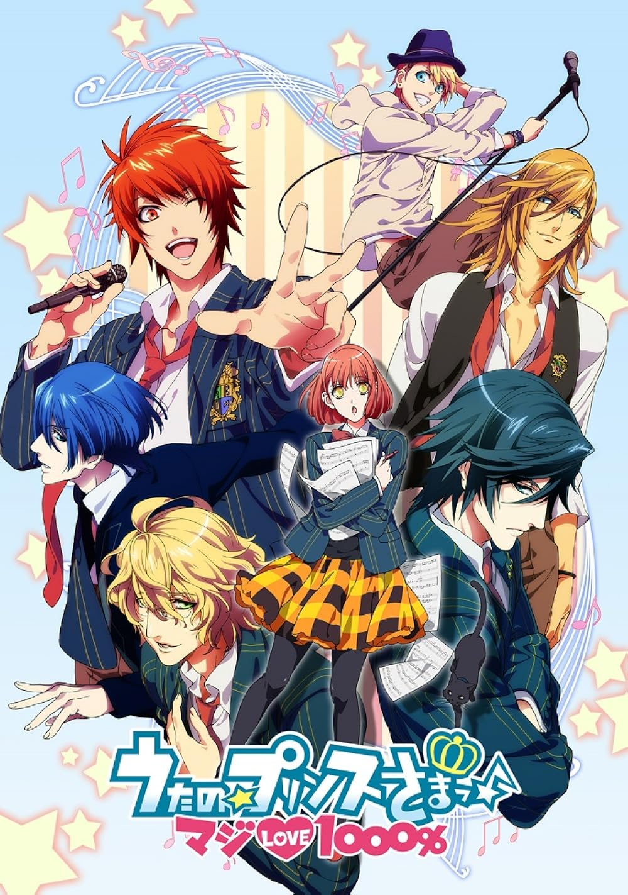
Haruka Nanami, una aspirante a compositora del campo, anhela escribir música para su amado ídolo, Hayato Ichinose. Decidida a lograrlo, se matricula en la Academia Saotome, una prestigiosa escuela vocacional de artes escénicas. Al llegar, Haruka pronto descubre que todo el personal, incluido el director, es ídolo, compositor o poeta. Para colmo, está rodeada de futuros ídolos y compositores increíblemente talentosos, y la competencia entre los estudiantes es feroz; con la posibilidad de ser reclutada por la Agencia Shining al graduarse, las expectativas son altísimas. Mientras se esfuerza por alcanzar su sueño en la academia, una noche fatídica, una serie de eventos la llevan hasta un hombre misterioso que se encuentra a la luz de la luna y que le resulta extrañamente familiar...
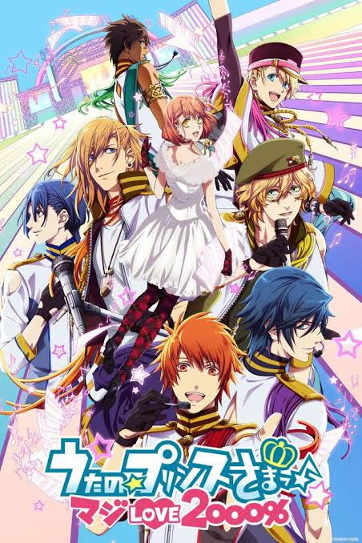
Al comenzar su maestría, Nanami Haruka se enfrenta a una situación aún más difícil. Y no es la única. ¡A los seis miembros principales de Starish les asignan nuevos tutores! Pero estos no se lo toman muy bien.
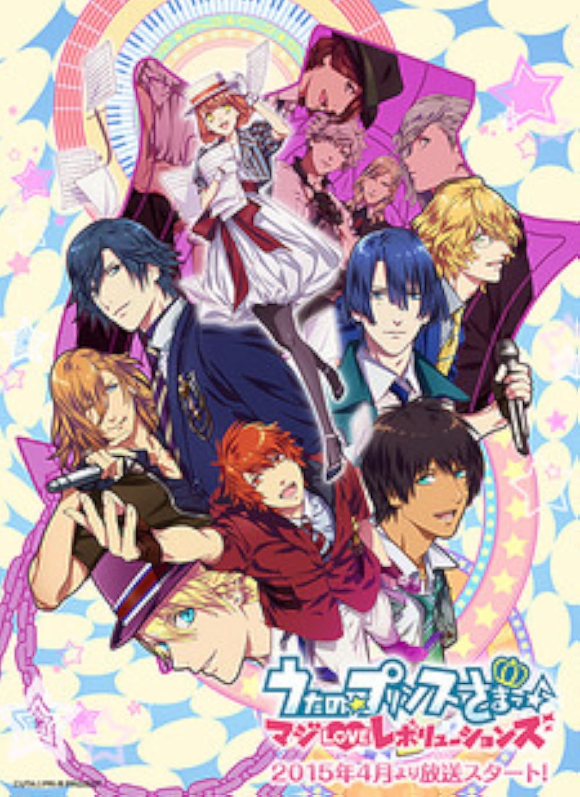
A los Starish se les asignan nuevas tareas en equipos recién divididos, y hacen todo lo posible para impresionar a Shining Saotome y conseguir que les permita participar en SSS, un concurso musical de alto nivel. Mientras tanto, Haruka trabaja con Quartet Night.
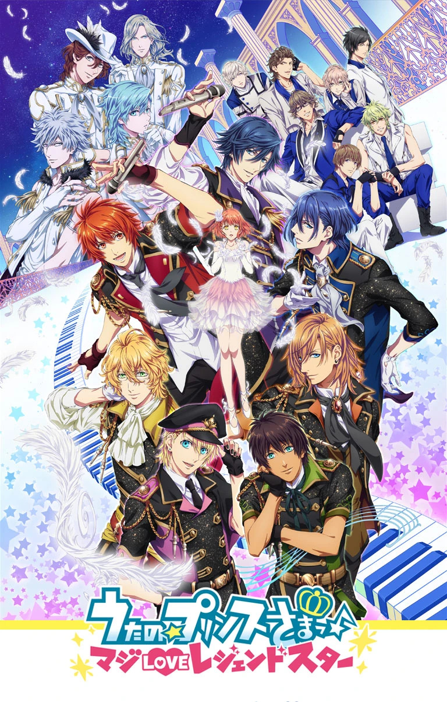
La historia del anime comenzará donde terminó la tercera temporada, en la competencia por la inauguración del evento deportivo internacional Triple S. El grupo idol HE★VENS de Raging Entertainment había secuestrado la competencia entre QUARTET NIGHT y ST☆RISH, provocando el caos. Sin embargo, tras una idea propuesta por los miembros de QUARTET NIGHT, los tres grupos se preparan para un nuevo escenario, con HE★VENS jurando vengarse de los otros dos.
Tras quedarse dormida y no oír sus cuatro alarmas, la enérgica Narumi Momose llega tarde a su primer día de trabajo en una nueva oficina. Mientras corre para alcanzar el tren, se promete a sí misma que ninguno de sus compañeros descubrirá su oscuro secreto: que es otaku y fujoshi. Sin embargo, su plan se tuerce al instante cuando se encuentra con Hirotaka Nifuji, un viejo amigo de la secundaria. Aunque intenta mantener su secreto invitándolo a tomar algo después del trabajo, su tapadera se descubre cuando él le pregunta casualmente si asistirá al próximo Summer Comiket. Por suerte para ella, los únicos testigos —Hanako Koyanagi y Tarou Kabakura— también son otakus. Más tarde esa noche, salen a tomar algo para ponerse al día después de tantos años. Después de que Narumi se queja de que su exnovio rompió con ella porque se negaba a salir con una fujoshi, Hirotaka le sugiere que intente salir con otro otaku, concretamente con él mismo. Él le hace una promesa solemne: estar siempre a su lado, apoyarla y ayudarla a conseguir objetos raros en Monster Hunter. Impresionada por la propuesta, Narumi acepta de inmediato. Así, los dos otakus comienzan a salir, y su adorable y peculiar romance empieza.